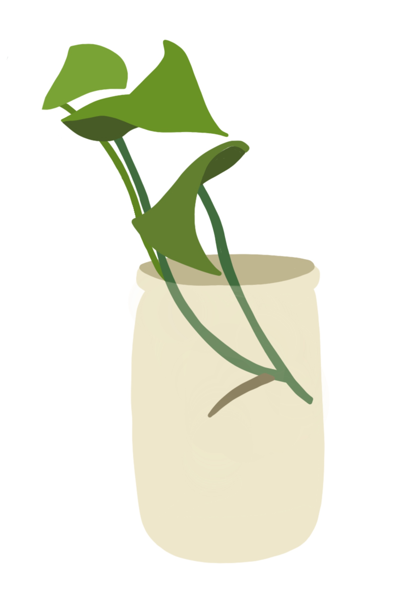

Propagation is the process of reproducing a single parent plant into multiple children plants.
Propagation differs from reproduction because it utilizes a semi-mature plant and thus, requires less time to reproduce.

The best and easiest way to propagate your plant is to use the cutting method.
Tools and equipment:
A plant
A small vase or jar
Water
Clean, sharp sissors
Find the node that has a 4-8 inch stem length and has about 2-3 leaves attached.
Make a diagonal cut just below the node.
Place the cutting in a tall glass filled with water so that the roots are just below the surface of the water.
In about a week, roots should begin to form by the node of the cutting. Once a strong root system has developed, or at least
one root that is about 4 inches long, pot the cutting as usual using lightweight potting soil.
Place the pot where it will recieve indirect bright light. Start by watering it heavily to help it transition to the soil. Keep it
moist but not soaking.